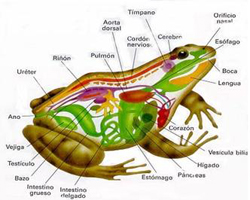

– Tienen la piel fina y húmeda.
– Tienen cuatro extremidades o patas (tetrápodos).
Funciones:
– Son también ectotérmicos.
– Respiran por la piel. También respiran por pulmones y cuando son renacuajos respiran por branquias.
– Su fecundación es externa y ovíparos.
– Del huevo sale una larva (renacuajo) que se irá transformando hasta convertirse en un adulto. Este conjunto de cambios se llama metamorfosis.
– La mayoría son carnívoros (arañas, insectos, lombrices,…). Los renacuajos son herbívoros.
